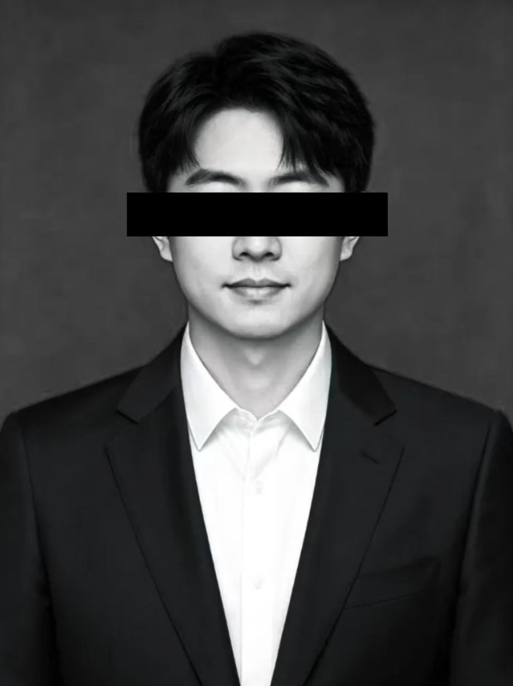

任职时间：2003年10月 - 2014年10月
孙磊先生担任项目统筹，是连接研发、临床、法规及生产等所有核心环节的关键项目经理。他拥有项目管理专业人士（PMP）认证以及超过十年的医疗器械行业项目管理经验，曾成功推动多个三类有源植入式医疗器械从设计开发到获证上市的全过程。孙磊先生对医疗器械质量管理体系（ISO 13485）以及国内外注册法规（NMPA、FDA、CE-MDR）有深刻理解。他善于将复杂的、多学科交叉的脑机接口研发任务分解为可量化、可追踪的子任务，并制定精确到周的项目里程碑。在他的协调下，芯片、算法、神经科学、生物工程等平时“语言不通”的团队能够高效协作，定期召开技术协调会，及时识别和化解接口风险。他建立了公司内部的项目风险管理数据库，对技术难点、供应链瓶颈、注册路径不确定性等潜在风险进行动态评估与预案管理。孙磊先生还负责外部合作方（如合同研究组织、临床中心、核心供应商）的沟通与进度把控。他性格沉稳，逻辑清晰，总能在项目“卡壳”时迅速组织跨部门攻关小组，调动资源解决问题，被同事们亲切地称为“所有进度的守护者”。
返回员工列表